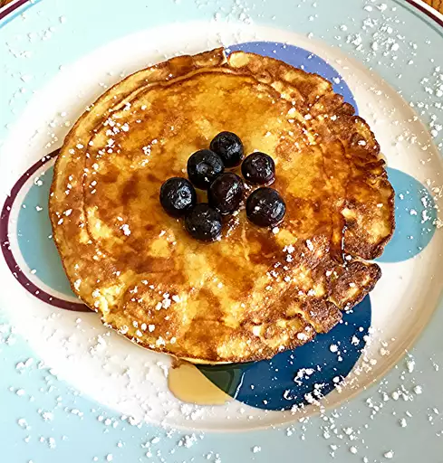

Low-Carb Pancakes

Description
It is an easy recipe to make some low-carb pancakes and it takes 20 min to make them,
10 min to prepare them and another 10 min to cook them, there are 3 portions that consist of 12 small pancakes in total.
Ingredients
5 eggs
1 (8 ounce) package cream cheese, softened
1 tablespoon maple syrup
2 teaspoons coconut flour
1 teaspoon ground cinnamon
cooking spray
Steps
- Preheat an electric griddle to 225 degrees F (107 degrees C).
- Blend eggs and cream cheese in a blender until smooth. Add maple syrup, coconut flour, and cinnamon; blend until batter is smooth.
- Spray the preheated griddle with cooking spray. Pour batter onto the griddle to form small pancakes.
Cook until edges set and do not tear when lifted with a spatula, 5 to 7 minutes. Flip pancakes gently with 2 rubber spatulas.
Cook until second side is set, about 5 minutes. Repeat with remaining batter, spraying griddle between batches.